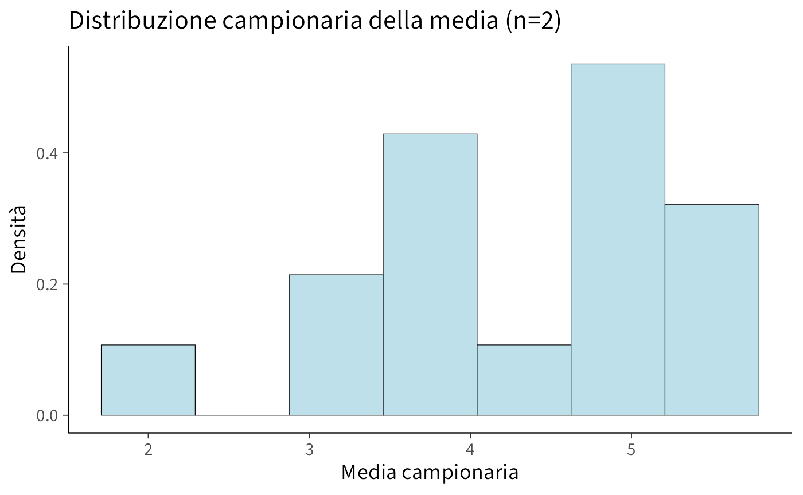
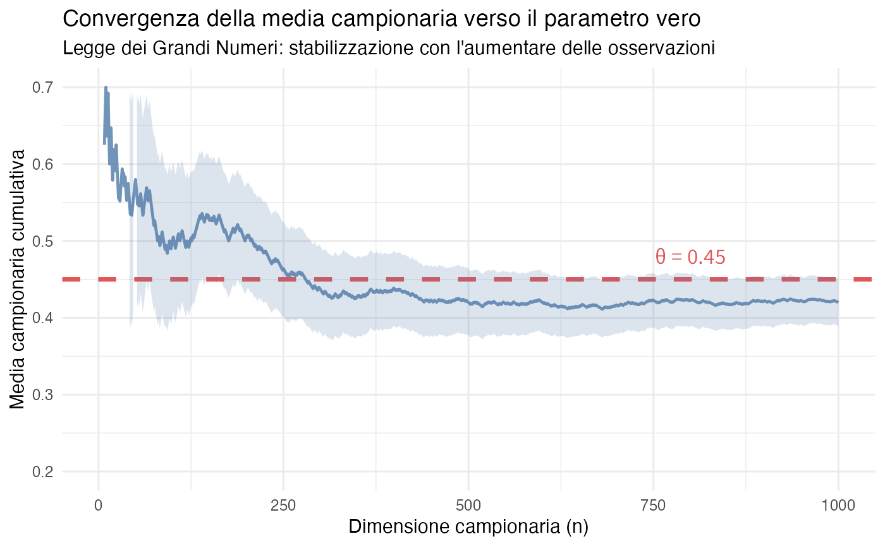
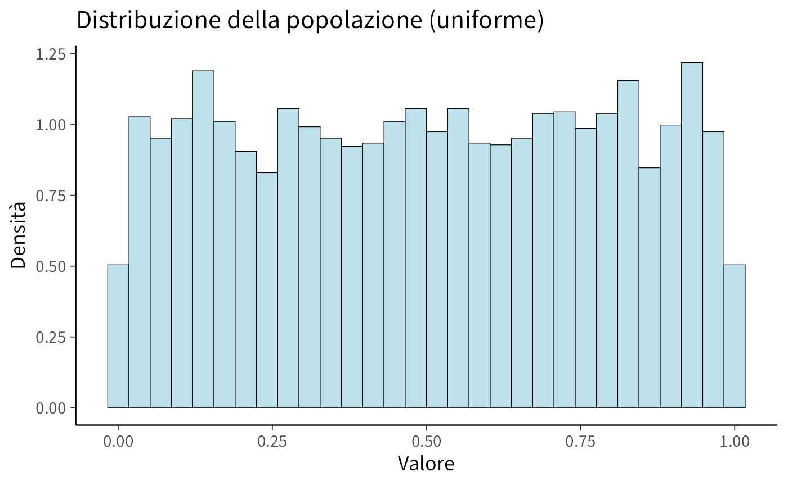
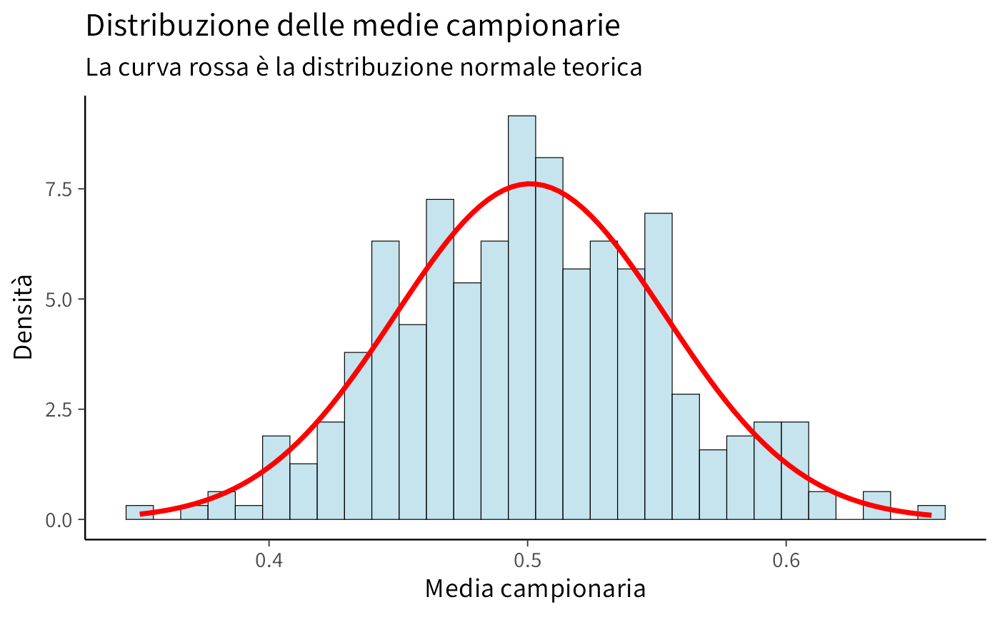
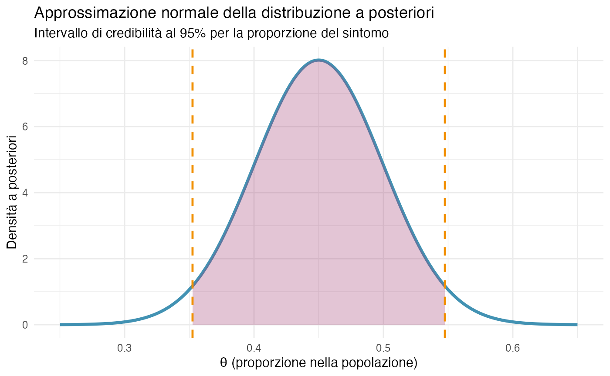
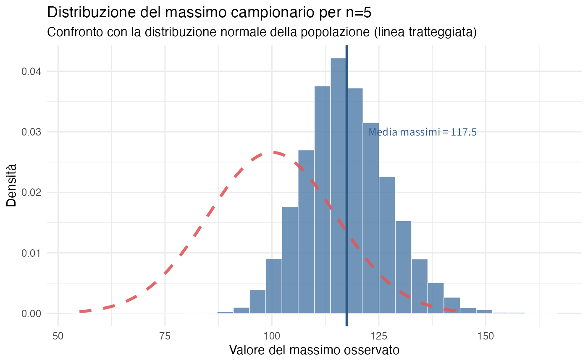
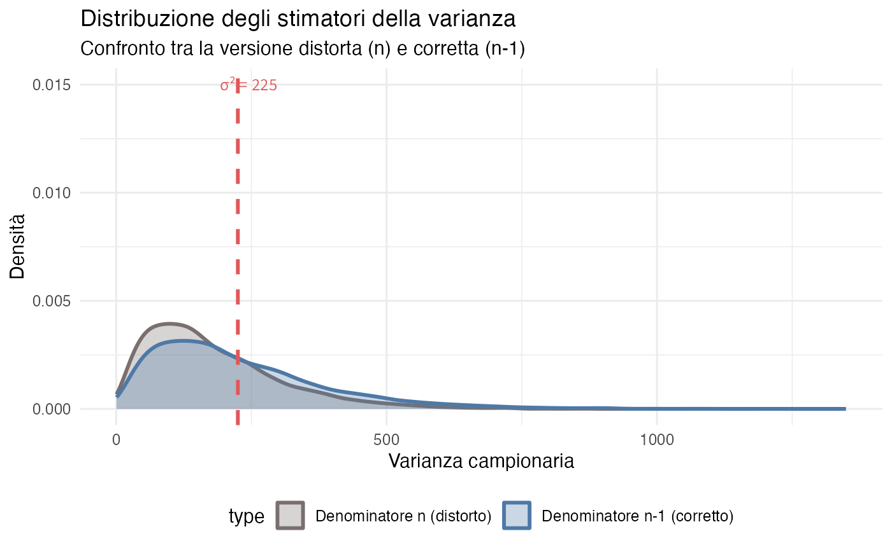
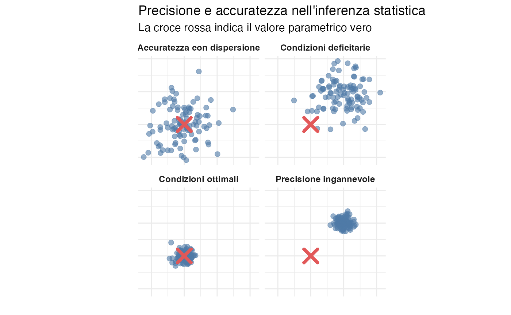
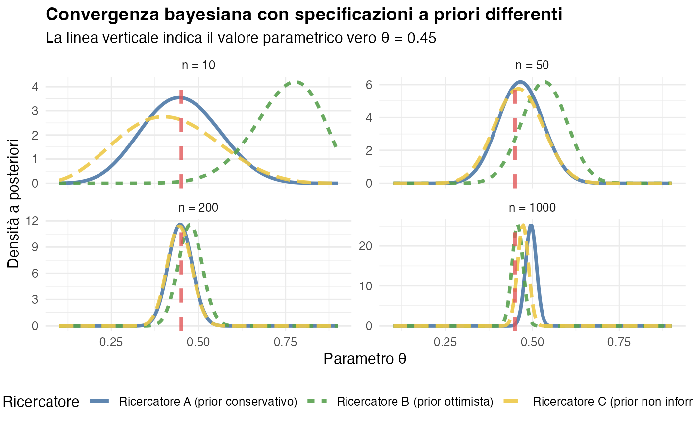

9 Incertezza, dati e inferenza
“La probabilità non riguarda quello che è successo, ma quello che sappiamo. È una misura della nostra incertezza, non una proprietà del mondo esterno.”
— E.T. Jaynes, Probability Theory: The Logic of Science (2003)
Introduzione
Nella ricerca psicologica ci si trova costantemente di fronte all’incertezza. Desideriamo comprendere fenomeni complessi, come la prevalenza di un disturbo d’ansia, l’efficacia di un trattamento terapeutico o la relazione tra stress e prestazione cognitiva, ma non abbiamo mai accesso a informazioni complete. I dati che raccogliamo sono limitati: osserviamo un certo numero di partecipanti in contesti specifici utilizzando strumenti di misurazione imperfetti.
Come possiamo quantificare la nostra incertezza sulle quantità di interesse a partire da queste osservazioni parziali? Come possiamo esprimere, in termini probabilistici, quanto siamo sicuri che la prevalenza di un disturbo rientri in un certo intervallo o che un trattamento sia efficace?
Questo capitolo affronta proprio queste fondamentali domande dell’inferenza statistica. L’approccio che adotteremo considera i parametri, ovvero le quantità che vogliamo conoscere, come proporzioni, medie o varianze, non come valori “reali ma sconosciuti” fissati da qualche entità esterna, ma come oggetti rispetto ai quali abbiamo incertezza, quantificabile attraverso distribuzioni di probabilità.
9.1 Due tipi di incertezza
È utile ricordare qui che dobbiamo sempre distinguere due forme di incertezza che incontriamo nell’analisi dei dati:
Incertezza epistemica (dal greco episteme, conoscenza): riguarda la nostra limitata conoscenza dei parametri del fenomeno che stiamo studiando; Non conosciamo con esattezza la proporzione di persone con un certo disturbo o la media di un punteggio in una popolazione. Questa incertezza può essere ridotta raccogliendo più dati.
Incertezza aleatoria: riguarda la variabilità intrinseca dei fenomeni che osserviamo. Anche se conoscessimo perfettamente tutti i parametri di una distribuzione, le singole osservazioni future rimarrebbero comunque imprevedibili. Ad esempio, anche conoscendo il QI medio, pari a 100, con deviazione standard 15, non è possibile prevedere con esattezza il QI della prossima persona che sottoponiamo al test.
In questo capitolo ci concentreremo principalmente sull’incertezza epistemica, ovvero quella relativa ai parametri, e su come essa venga ridotta dalle osservazioni empiriche.
9.1.1 Un esempio concreto: stima della prevalenza di sintomi depressivi
Supponiamo di voler determinare la prevalenza di sintomi depressivi clinicamente significativi nella popolazione studentesca universitaria. Data l’impraticabilità di valutare l’intera popolazione, adottiamo la seguente procedura:
- reclutiamo un campione di 200 studenti tramite un campionamento probabilistico;
- rileviamo che 72 partecipanti presentano sintomi depressivi clinicamente significativi;
- ci proponiamo di quantificare l’incertezza relativa al parametro \(\theta\), che rappresenta la prevalenza nella popolazione di riferimento.
L’approccio frequentista classico concettualizza \(\theta\) come un valore fisso sebbene ignoto. Si procede calcolando una stima puntuale \(\hat{\theta} = 72/200 = 0.36\) e costruendo un intervallo di confidenza al 95% che risulta essere [0.29, 0.43]. L’interpretazione di questo intervallo richiede una prospettiva controfattuale: se potessimo ripetere infinite volte il processo di campionamento e la costruzione dell’intervallo, il 95% di tali intervalli conterrebbe il valore del parametro vero \(\theta\).
L’approccio bayesiano, invece, considera \(\theta\) come una quantità intrinsecamente incerta, rappresentabile attraverso una distribuzione di probabilità. Prima della raccolta dati, esprimiamo le nostre conoscenze preliminari attraverso una distribuzione a priori su \(\theta\). Dopo aver osservato i dati (72 casi su 200), aggiorniamo tale distribuzione ottenendo una distribuzione a posteriori. Da questa distribuzione a posteriori otteniamo un intervallo di credibilità al 95% [0.29; 0.43], la cui interpretazione risulta immediata: sulla base dei risultati osservati, riteniamo che esista una probabilità del 95% che il vero valore del parametro \(\theta\) nella popolazione si collochi tra 0.29 e 0.43.
Questa seconda interpretazione risulta notevolmente più intuitiva e naturalmente allineata con il modo in cui i ricercatori concepiscono l’incertezza nei processi inferenziali, fornendo una risposta diretta alla domanda di ricerca che ha motivato lo studio.
Panoramica del capitolo
In questo capitolo esploreremo:
- le proprietà matematiche fondamentali che governano come i dati riducono l’incertezza;
- come quantificare l’incertezza sui parametri usando distribuzioni di probabilità;
- il ruolo della quantità di dati nel determinare la precisione delle nostre inferenze;
- la convergenza della nostra conoscenza verso la “realtà” al crescere delle osservazioni;
- i limiti dell’inferenza statistica, indipendentemente dall’approccio adottato.
9.2 Dati, parametri e incertezza
9.2.1 Dati osservati e parametro di interesse
Supponiamo di voler indagare la prevalenza di un sintomo d’ansia specifico all’interno della popolazione studentesca universitaria. L’obiettivo ideale sarebbe quello di determinare con esattezza la proporzione \(\theta\) di studenti che manifestano il sintomo. Tuttavia, l’osservazione completa della popolazione è impraticabile, costringendoci a una strategia indiretta:
- selezioniamo un campione rappresentativo di \(n\) studenti;
- per ciascun partecipante, registriamo la presenza o l’assenza del sintomo attraverso una codifica binaria;
- sfruttiamo queste osservazioni campionarie per costruire un’inferenza probabilistica su \(\theta\).
Formalizziamo le osservazioni mediante le variabili aleatorie \(X_1, X_2, \ldots, X_n\), dove ciascuna \(X_i\) assume il valore:
\[ X_i = \begin{cases} 1 & \text{se lo studente } i \text{ presenta il sintomo} \\ 0 & \text{in caso contrario} \end{cases} \]
Questa rappresentazione ci permette di modellare matematicamente il processo di raccolta dei dati e di quantificare rigorosamente l’incertezza associata alla stima del parametro di interesse, \(\theta\).
9.2.2 Dalla statistica descrittiva all’inferenza probabilistica
La proporzione campionaria fornisce una sintesi descrittiva dei dati osservati:
\[ \bar{X} = \frac{1}{n}\sum_{i=1}^n X_i = \frac{\text{numero di studenti con sintomo}}{n}. \]
Tuttavia, l’obiettivo scientifico va oltre la mera descrizione campionaria: desideriamo utilizzare \(\bar{X}\) per compiere inferenze sul parametro \(\theta\), che rappresenta la proporzione vera nella popolazione studentesca di riferimento.
La questione fondamentale diventa: in che modo il valore osservato di \(\bar{X}\) dovrebbe modificare la nostra incertezza riguardo a \(\theta\)?
9.2.3 Il modello probabilistico di riferimento
Per rispondere a questa domanda, costruiamo un modello probabilistico che metta in relazione:
- le osservazioni empiriche \(X_1, \ldots, X_n\);
- il parametro di interesse \(\theta\), soggetto a incertezza epistemica;
- la conoscenza pregressa disponibile prima della raccolta dei dati.
Assumiamo che, condizionatamente al parametro \(\theta\), ciascuna osservazione segua una distribuzione di Bernoulli:
\[ X_i \mid \theta \sim \text{Bernoulli}(\theta) \]
Questa assunzione implica che, se il valore di \(\theta\) fosse noto, la probabilità di osservare il sintomo in uno studente qualsiasi sarebbe esattamente \(\theta\).
Notazione condizionale e sua interpretazione
La notazione \(X_i \mid \theta\) indica che stiamo considerando la distribuzione della variabile \(X_i\) nell’ipotesi che il parametro \(\theta\) sia fissato a un valore specifico. Questa formulazione non presuppone la conoscenza effettiva di \(\theta\), ma piuttosto struttura il nostro ragionamento ipotetico: “se il valore di \(\theta\) fosse questo, allora le nostre osservazioni si comporterebbero in questo modo”.
9.3 Proprietà fondamentali della media campionaria
Prima di affrontare l’inferenza bayesiana completa, è utile comprendere alcune proprietà matematiche che valgono indipendentemente dal framework inferenziale adottato. Queste proprietà ci dicono come la media campionaria \(\bar{X}\) si comporta in relazione al parametro \(\theta\).
9.3.1 Valore atteso della media campionaria
Supponiamo di avere osservazioni \(X_1, X_2, \ldots, X_n\) indipendenti e identicamente distribuite (i.i.d.), ciascuna con valore atteso \(\mathbb{E}[X_i \mid \theta] = \theta\).
Teorema 9.1 Il valore atteso della media campionaria è:
\[ \mathbb{E}[\bar{X} \mid \theta] = \theta. \]
Dimostrazione. Partendo dalla definizione di media campionaria:
\[ \bar{X} = \frac{1}{n}\sum_{i=1}^n X_i, \]
calcoliamo il valore atteso:
\[ \mathbb{E}[\bar{X} \mid \theta] = \mathbb{E}\left[\frac{1}{n}\sum_{i=1}^n X_i \bigg| \theta\right]. \]
Per la linearità del valore atteso:
\[ = \frac{1}{n}\sum_{i=1}^n \mathbb{E}[X_i \mid \theta]. \]
Poiché tutte le \(X_i\) sono identicamente distribuite con \(\mathbb{E}[X_i \mid \theta] = \theta\):
\[ = \frac{1}{n} \cdot n\theta = \theta. \]
Interpretazione: questo risultato ci dice che la media campionaria è centrata sul valore del parametro. Non presenta un bias sistematico né verso l’alto né verso il basso. Questa proprietà è fondamentale per giustificare l’uso di \(\bar{X}\) come base per trarre inferenze su \(\theta\).
9.3.2 Varianza della media campionaria
La seconda proprietà fondamentale riguarda la variabilità di \(\bar{X}\).
Teorema 9.2 Se le osservazioni sono indipendenti con varianza \(\text{Var}(X_i \mid \theta) = \sigma^2\), allora:
\[ \text{Var}(\bar{X} \mid \theta) = \frac{\sigma^2}{n}. \]
Dimostrazione. Partiamo dalla varianza della media campionaria:
\[ \text{Var}(\bar{X} \mid \theta) = \text{Var}\left(\frac{1}{n}\sum_{i=1}^n X_i \bigg| \theta\right). \]
Usando la proprietà \(\text{Var}(aY) = a^2\text{Var}(Y)\):
\[ = \frac{1}{n^2}\text{Var}\left(\sum_{i=1}^n X_i \bigg| \theta\right). \]
Per l’indipendenza, la varianza della somma è la somma delle varianze:
\[ = \frac{1}{n^2}\sum_{i=1}^n \text{Var}(X_i \mid \theta) = \frac{1}{n^2} \cdot n\sigma^2 = \frac{\sigma^2}{n}. \]
Interpretazione cruciale: questo risultato mostra che la variabilità di \(\bar{X}\) diminuisce con \(n\). Più dati vengono raccolti, più \(\bar{X}\) diventa “stabile” e informativo su \(\theta\). La varianza diminuisce proporzionalmente a 1/n, quindi:
- con \(n=100\) dati, la varianza di \(\bar{X}\) è 1/100 della varianza delle singole osservazioni;
- per dimezzare la deviazione standard di \(\bar{X}\), dobbiamo quadruplicare \(n\).
9.3.3 Il caso Bernoulli
Per variabili 0-1 (presenza/assenza di sintomo), abbiamo:
\[ \text{Var}(X_i \mid \theta) = \theta(1-\theta). \]
Quindi:
\[ \text{Var}(\bar{X} \mid \theta) = \frac{\theta(1-\theta)}{n}. \]
La deviazione standard di \(\bar{X}\), spesso chiamata errore standard, è:
\[ \text{SE}(\bar{X}) = \sqrt{\frac{\theta(1-\theta)}{n}}. \]
Questa quantità misura quanto ci si aspetta che \(\bar{X}\) vari “per caso” se si potesse ripetere l’osservazione. Nel contesto bayesiano, contribuisce a determinare quanto i dati siano informativi: un errore standard più piccolo indica che i dati forniscono informazioni più precise su \(\theta\).
9.4 Comprendere la variabilità dei dati
9.4.1 Il concetto di distribuzione campionaria
Immaginiamo di poter (ipoteticamente) osservare molti campioni diversi dalla stessa popolazione, ciascuno di dimensione \(n\). Per ognuno di essi calcoleremmo \(\bar{X}\), ottenendo valori diversi. La distribuzione campionaria di \(\bar{X}\) descrive come questi valori si distribuiscono.
Questo concetto teorico è estremamente utile per due motivi:
Nel paradigma frequentista la distribuzione campionaria di \(\bar{X}\) serve per costruire intervalli di confidenza e test di ipotesi.
nel paradigma bayesiano aiuta a comprendere come i dati influenzino la distribuzione a posteriori. La distribuzione campionaria contribuisce alla funzione di verosimiglianza, che è centrale nell’aggiornamento bayesiano.
9.4.2 Esempio concreto: una popolazione finita
Per rendere tutto più concreto, consideriamo un caso semplice: una popolazione di soli 4 valori.
x <- c(2, 4.5, 5, 5.5)
x
#> [1] 2.0 4.5 5.0 5.5Calcoliamo media e varianza di questa popolazione:
Ora consideriamo tutti i possibili campioni di dimensione \(n=2\) (con reinserimento). Ci sono \(4^2 = 16\) possibili coppie:
# Generiamo tutte le coppie possibili
samples <- expand.grid(x, x)
head(samples, 10)
#> Var1 Var2
#> 1 2.0 2.0
#> 2 4.5 2.0
#> 3 5.0 2.0
#> 4 5.5 2.0
#> 5 2.0 4.5
#> 6 4.5 4.5
#> 7 5.0 4.5
#> 8 5.5 4.5
#> 9 2.0 5.0
#> 10 4.5 5.0Per ogni coppia, calcoliamo la media:
sample_means <- rowMeans(samples)
sample_means
#> [1] 2.00 3.25 3.50 3.75 3.25 4.50 4.75 5.00 3.50 4.75 5.00 5.25 3.75 5.00 5.25
#> [16] 5.50Creiamo un data frame per visualizzare:
df <- data.frame(
Campione = apply(samples, 1, paste, collapse = ", "),
Media = sample_means
)
head(df, 10)
#> Campione Media
#> 1 2, 2 2.00
#> 2 4.5, 2 3.25
#> 3 5, 2 3.50
#> 4 5.5, 2 3.75
#> 5 2, 4.5 3.25
#> 6 4.5, 4.5 4.50
#> 7 5, 4.5 4.75
#> 8 5.5, 4.5 5.00
#> 9 2, 5 3.50
#> 10 4.5, 5 4.75Visualizziamo la distribuzione di queste medie campionarie:
ggplot(data.frame(sample_means), aes(x = sample_means)) +
geom_histogram(
bins = 7,
aes(y = after_stat(density)),
fill = "lightblue",
color = "black"
) +
labs(
title = "Distribuzione campionaria della media (n=2)",
x = "Media campionaria",
y = "Densità"
)
Verifichiamo le proprietà teoriche:
#> Media delle medie campionarie: 4.25
#> Media della popolazione: 4.25
#> Varianza delle medie campionarie: 0.906
#> Varianza teorica (σ²/n): 0.906Come previsto dalla teoria:
- la media delle medie campionarie coincide con la media della popolazione;
- la varianza delle medie campionarie è \(\sigma^2/n\).
9.5 Legge dei Grandi Numeri
La Legge dei Grandi Numeri (LGN) è uno dei pilastri della teoria della probabilità e ha profonde implicazioni per l’inferenza statistica, sia frequentista che bayesiana.
9.5.1 Enunciato intuitivo
La LGN afferma che, all’aumentare del numero di osservazioni \(n\), la media campionaria \(\bar{X}_n\) converge al valore atteso \(\theta\):
\[ \bar{X}_n \xrightarrow{n \to \infty} \theta. \]
In termini più precisi, esistono due forme:
-
Legge Debole: \(\bar{X}_n\) converge a \(\theta\) in probabilità, cioè per ogni \(\varepsilon > 0\):
\[ \Pr\bigl(|\bar{X}_n - \theta| > \varepsilon \mid \theta\bigr) \to 0 \quad \text{quando } n \to \infty. \]
-
Legge Forte: \(\bar{X}_n\) converge a \(\theta\) quasi certamente, cioè:
\[ \Pr\left(\lim_{n \to \infty} \bar{X}_n = \theta \bigg| \theta\right) = 1. \]
9.5.2 Implicazioni per l’inferenza
Dal punto di vista frequentista, la LGN garantisce che le stime basate su \(\bar{X}_n\) siano consistenti: con un numero sufficiente di dati, la stima converge al valore effettivo del parametro.
Dal punto di vista bayesiano, la LGN ha un’interpretazione ancora più diretta: all’aumentare di \(n\), la distribuzione a posteriori di \(\theta\) ddiventa sempre più concentrata attorno al valore vero, indipendentemente dalla prior iniziale, a condizione che questa assegni una massa positiva al valore vero.
In altre parole: con sufficienti dati, anche credenze iniziali molto diverse convergono alla stessa conclusione. Questo risultato è rassicurante e mostra la robustezza dell’inferenza bayesiana.
9.5.3 Simulazione della convergenza campionaria
Esaminiamo un scenario in cui il parametro vero è \(\theta = 0.45\). Simuliamo campioni di dimensione crescente per osservare empiricamente il comportamento della media campionaria:
set.seed(42)
theta_true <- 0.45
n_max <- 1000
# Generazione delle osservazioni bernoulliane
observations <- rbinom(n_max, size = 1, prob = theta_true)
# Calcolo delle medie cumulative
cumulative_means <- cumsum(observations) / seq_along(observations)
# Preparazione dei dati per la visualizzazione
data_plot <- data.frame(
n = 1:n_max,
mean = cumulative_means
)
ggplot(data_plot, aes(x = n, y = mean)) +
geom_line(color = "#4E79A7", linewidth = 0.8, alpha = 0.8) +
geom_hline(yintercept = theta_true,
linetype = "dashed",
color = "#E15759",
linewidth = 1.2) +
geom_ribbon(aes(ymin = mean - 1.96 * sqrt(mean * (1 - mean) / n),
ymax = mean + 1.96 * sqrt(mean * (1 - mean) / n)),
alpha = 0.2, fill = "#4E79A7") +
labs(
title = "Convergenza della media campionaria verso il parametro vero",
subtitle = "Legge dei Grandi Numeri: stabilizzazione con l'aumentare delle osservazioni",
x = "Dimensione campionaria (n)",
y = "Media campionaria cumulativa"
) +
ylim(0.2, 0.7) +
theme_minimal() +
annotate("text", x = 800, y = theta_true + 0.03,
label = paste("θ =", theta_true),
color = "#E15759", size = 4.5)
Osservazioni empiriche: nelle fasi iniziali del campionamento, la media campionaria \(\bar{X}_n\) presenta ampie e imprevedibili fluttuazioni, riflettendo l’elevata variabilità associata a piccole dimensioni del campione. Man mano che le osservazioni si accumulano, l’ampiezza delle oscillazioni diminuisce in modo sistematico. Una volta raggiunti campioni sufficientemente ampi, la media campionaria si stabilizza in prossimità del valore parametrico vero, dimostrando visivamente il principio di convergenza garantito dalla legge dei grandi numeri.
9.5.4 Applicazioni in psicologia
La Legge dei Grandi Numeri ha rilevanti implicazioni per la ricerca psicologica.
Gli studi pilota, caratterizzati tipicamente da dimensioni campionarie ridotte, producono stime soggette a notevole variabilità. Ciò spiega perché le replicazioni con campioni più ampi tendono a generare risultati più stabili e affidabili dal punto di vista metodologico.
Le meta-analisi sfruttano implicitamente questo principio combinando le evidenze di molti studi, aumentando virtualmente la dimensione del campione complessivo e riducendo l’incertezza associata alla stima degli effetti.
Nei disegni longitudinali, l’osservazione ripetuta nel tempo degli stessi fenomeni permette di ridurre progressivamente l’incertezza riguardante le caratteristiche relativamente stabili dei costrutti indagati.
Tuttavia, la legge dei grandi numeri rappresenta solo una componente del quadro teorico necessario. Il Teorema del Limite Centrale completa questa visione, fornendo informazioni cruciali sulla forma distributiva della media campionaria \(\bar{X}_n\) e permettendo di determinare non solo dove converge la stima, ma anche come l’incertezza si distribuisce attorno a tale valore.
9.6 Teorema del Limite Centrale
Il Teorema del Limite Centrale costituisce uno dei pilastri concettuali più profondi della teoria della probabilità, con conseguenze metodologiche di ampia portata per la statistica inferenziale.
9.6.1 Enunciato formale
Teorema 9.3 Siano \(X_1, X_2, \ldots, X_n\) variabili aleatorie indipendenti e identicamente distribuite con valore atteso \(\mu\) e varianza \(\sigma^2\) finite. Allora, al crescere di \(n\), la distribuzione della media campionaria \(\bar{X}_n\) converge verso una distribuzione normale:
\[ \bar{X}_n \;\dot\sim\; \mathcal{N}\left(\mu, \frac{\sigma^2}{n}\right) \]
dove la notazione \(\dot\sim\) indica “approssimativamente distribuito come” per \(n\) sufficientemente grande.
9.6.2 Portata concettuale
La proprietà sorprendente del teorema risiede nel fatto che la media di numerose variabili indipendenti tende a distribuirsi secondo una legge normale indipendentemente dalla forma della distribuzione delle variabili originarie. Questo principio di universalità si applica a un’ampia gamma di situazioni:
- variabili uniformemente distribuite;
- variabili con distribuzione esponenziale;
- variabili binarie dicotomiche:
- distribuzioni marcatamente asimmetriche.
In tutti questi casi, la distribuzione della media campionaria tende sistematicamente verso la distribuzione normale, fornendo una solida base teorica per molteplici procedure inferenziali ampiamente utilizzate nella ricerca psicologica.
9.6.3 Visualizzazione del TLC
Consideriamo una popolazione con distribuzione uniforme (chiaramente non normale):
set.seed(42)
population <- runif(5000, min = 0, max = 1)
# Istogramma della popolazione
ggplot(data.frame(population), aes(x = population)) +
geom_histogram(
aes(y = after_stat(density)),
bins = 30,
fill = "lightblue",
color = "black"
) +
labs(
title = "Distribuzione della popolazione (uniforme)",
x = "Valore",
y = "Densità"
)
Ora estraiamo 300 campioni, ciascuno di dimensione \(n=30\), e calcoliamo le medie:
sample_size <- 30
num_samples <- 300
sample_means <- replicate(num_samples, {
sample_data <- sample(population, size = sample_size, replace = TRUE)
mean(sample_data)
})
# Media e deviazione standard delle medie campionarie
x_bar <- mean(sample_means)
std <- sd(sample_means)
cat("Media delle medie campionarie:", x_bar, "\n")
#> Media delle medie campionarie: 0.501
cat("Dev. standard delle medie:", std, "\n")
#> Dev. standard delle medie: 0.0524Confrontiamo con i valori teorici:
Visualizziamo la distribuzione delle medie campionarie con la curva normale teorica sovrapposta:
ggplot(data.frame(sample_means), aes(x = sample_means)) +
geom_histogram(
aes(y = after_stat(density)),
bins = 30,
fill = "lightblue",
color = "black",
alpha = 0.7
) +
stat_function(
fun = dnorm,
args = list(mean = x_bar, sd = std),
color = "red",
linewidth = 1.2
) +
labs(
title = "Distribuzione delle medie campionarie",
subtitle = "La curva rossa è la distribuzione normale teorica",
x = "Media campionaria",
y = "Densità"
)
Osservazione: nonostante la popolazione sia uniforme (non normale), la distribuzione delle medie è approssimativamente normale.
9.6.4 Implicazioni per l’inferenza bayesiana
Il Teorema del Limite Centrale ha un’influenza profonda sulla pratica dell’inferenza bayesiana, con conseguenze sia teoriche che applicative di ampia portata.
In contesti con ampi campioni, la distribuzione a posteriori tende a convergere verso una forma gaussiana, a prescindere dalla configurazione della distribuzione a priori, a condizione che quest’ultima sia sufficientemente regolare da non escludere valori plausibili del parametro. Questa proprietà di regolarità asintotica conferisce robustezza al metodo bayesiano, attenuando l’impatto delle specifiche scelte prior quando si dispone di un’abbondante evidenza empirica.
Questo risultato giustifica l’uso di approssimazioni gaussiane per la distribuzione a posteriori in molte applicazioni pratiche, semplificando notevolmente i calcoli in situazioni in cui forme analitiche esatte risulterebbero complesse o intrattabili. L’approssimazione gaussiana rende accessibili una vasta gamma di strumenti analitici sviluppati per la distribuzione normale.
Una conseguenza pratica di particolare rilevanza riguarda la costruzione di intervalli di credibilità. Con campioni di dimensioni consistenti, è possibile determinare gli intervalli di credibilità bayesiani utilizzando i quantili della distribuzione normale, anche quando il modello sottostante presenta una struttura complessa. Questo approccio approssimato conserva le proprietà probabilistiche desiderate, offrendo al contempo notevoli vantaggi computazionali.
9.6.5 Esempio bayesiano con il Teorema del Limite Centrale
Consideriamo un contesto di ricerca in psicologia clinica in cui si studia la prevalenza di un particolare sintomo. Supponiamo di adottare un prior uniforme per il parametro \(\theta\) compreso tra 0 e 1, rappresentante la proporzione nella popolazione, e di osservare un campione di 100 soggetti, tra i quali 45 manifestano il sintomo.
Per la dimensione del campione considerata, la distribuzione a posteriori può essere approssimata efficacemente mediante una distribuzione normale:
\[ \theta \mid y \;\dot\sim\; \mathcal{N}\left(\frac{45}{100}, \frac{0.45 \times 0.55}{100}\right) \]
# Parametri osservati
n <- 100
y <- 45
p_hat <- y / n
# Approssimazione normale della posteriore
posterior_mean <- p_hat
posterior_sd <- sqrt(p_hat * (1 - p_hat) / n)
cat("Media a posteriori (approssimata):", posterior_mean, "\n")
#> Media a posteriori (approssimata): 0.45
cat("Deviazione standard a posteriori:", round(posterior_sd, 4), "\n")
#> Deviazione standard a posteriori: 0.0497
# Intervallo di credibilità al 95%
lower <- qnorm(0.025, mean = posterior_mean, sd = posterior_sd)
upper <- qnorm(0.975, mean = posterior_mean, sd = posterior_sd)
cat("\nIntervallo di credibilità 95%: [", round(lower, 3), ",", round(upper, 3), "]\n")
#>
#> Intervallo di credibilità 95%: [ 0.352 , 0.548 ]La visualizzazione della distribuzione a posteriori approssimata risulta particolarmente illuminante:
theta_grid <- seq(0.25, 0.65, length.out = 1000)
posterior_density <- dnorm(theta_grid, mean = posterior_mean, sd = posterior_sd)
ggplot(data.frame(theta = theta_grid, density = posterior_density),
aes(x = theta, y = density)) +
geom_line(linewidth = 1.2, color = "#2E86AB") +
geom_area(aes(x = theta, y = density),
data = subset(data.frame(theta = theta_grid, density = posterior_density),
theta >= lower & theta <= upper),
fill = "#A23B72", alpha = 0.3) +
geom_vline(xintercept = c(lower, upper),
linetype = "dashed",
color = "#F18F01", size = 0.8) +
labs(
title = "Approssimazione normale della distribuzione a posteriori",
subtitle = "Intervallo di credibilità al 95% per la proporzione del sintomo",
x = "θ (proporzione nella popolazione)",
y = "Densità a posteriori"
) +
theme_minimal()
Interpretazione dell’intervallo di credibilità
L’intervallo [0.352, 0.548] può essere interpretato in modo probabilistico diretto: alla luce dei dati osservati, si può affermare che c’è una probabilità del 95% che la vera proporzione nella popolazione si collochi tra il 35.2% e il 54.8%. Questa interpretazione è più intuitiva e coerente con il modo in cui i ricercatori concepiscono l’incertezza parametrica, a differenza degli intervalli di confidenza frequentisti che presuppongono una concezione basata su ripetizioni campionarie ipotetiche.
9.7 Precisione, informazione ed errore standard
9.7.1 L’errore standard: prospettive interpretative
L’errore standard di una statistica rappresenta convenzionalmente la deviazione standard della sua distribuzione campionaria. Nel caso della media campionaria, questa quantità assume la forma:
\[ \text{SE}(\bar{X}) = \sqrt{\frac{\sigma^2}{n}} \]
Tale misura ammette due letture complementari che riflettono differenti filosofie inferenziali:
Prospettiva frequentista.
L’errore standard quantifica l’ampiezza della variazione che ci aspetteremmo nella media campionaria se potessimo replicare infinite volte il medesimo disegno di ricerca in condizioni identiche. Esso misura dunque la variabilità intrinseca imputabile al processo di campionamento casuale.
Prospettiva bayesiana e informazionale.
In questa visione, l’errore standard misura il grado di informazione contenuta nei dati riguardo al parametro di interesse. Un errore standard ridotto segnala che i dati forniscono evidenza precisa su \(\theta\), risultando in una distribuzione a posteriori concentrata attorno alla stima. Al contrario, un errore standard ampio indica dati scarsamente informativi, che si traducono in una distribuzione a posteriori più dispersa.
La seconda interpretazione presenta il vantaggio di non richiedere l’artificio concettuale delle ripetizioni campionarie ipotetiche, offrendo una comprensione più immediata dell’incertezza nell’inferenza che risulta particolarmente utile nella pratica della ricerca applicata.
9.7.2 Precisione come inverso della varianza
Nell’ambito della statistica bayesiana, risulta particolarmente utile concettualizzare l’incertezza attraverso la nozione di precisione, definita come il reciproco della varianza:
\[ \text{Precisione} = \frac{1}{\text{Varianza}}. \]
Applicando questo concetto alla media campionaria, otteniamo:
\[ \text{Precisione}(\bar{X} \mid \theta) = \frac{n}{\sigma^2}. \]
Questa formulazione rivela una proprietà notevole: la precisione cresce in proporzione diretta con la dimensione campionaria \(n\). Tale relazione lineare risulta più intuitiva del corrispondente andamento della varianza, che decresce secondo il fattore \(1/n\).
Precisione nella modellistica bayesiana.
Molti modelli bayesiani adottano esplicitamente la precisione come parametro fondamentale. La distribuzione normale, ad esempio, viene frequentemente parametrizzata nella forma:
\[ X \sim \mathcal{N}(\mu, \tau), \]
dove \(\tau = 1/\sigma^2\) rappresenta la precisione. Questa scelta parametrica illumina due principi fondamentali:
- un valore di precisione elevato corrisponde a un grado di incertezza ridotto;
- la combinazione di informazioni provenienti da fonti indipendenti si realizza attraverso la semplice somma delle rispettive precisioni, operazione che risulterebbe notevolmente più complessa se espressa in termini di varianze.
9.7.3 Combinazione di informazioni: integrazione tra conoscenza pregressa ed evidenza empirica
Un aspetto particolarmente elegante del framework bayesiano risiede nella sua capacità di integrare in modo naturale diverse fonti di informazione. Consideriamo due componenti fondamentali:
- la distribuzione a priori, che riflette il grado di conoscenza preesistente riguardo al parametro di interesse, possiede una precisione \(\tau_0\);
- i dati osservati esibiscono una precisione \(n/\sigma^2\), che quantifica l’informatività dell’evidenza empirica raccolta.
La precisione della distribuzione a posteriori emerge allora come semplice somma delle due componenti:
\[ \tau_{\text{post}} = \tau_0 + \frac{n}{\sigma^2} \]
Questa relazione formalizza in modo particolarmente chiaro il processo di accumulo della conoscenza: ogni nuova osservazione contribuisce ad aumentare la precisione complessiva della nostra inferenza, rafforzando progressivamente la nostra comprensione del fenomeno in esame.
9.7.4 Esempio: sintesi delle evidenze da studi multipli
Consideriamo due studi psicologici che indagano lo stesso costrutto, \(\theta\), ma che presentano dimensioni campionarie e precisioni differenti:
Studio A: \(n_A = 50\), \(\bar{X}_A = 0.42\), \(\text{SE}_A = 0.07\)
Studio B: \(n_B = 200\), \(\bar{X}_B = 0.38\), \(\text{SE}_B = 0.035\)
# Parametri degli studi
n_A <- 50; x_bar_A <- 0.42; se_A <- 0.07
n_B <- 200; x_bar_B <- 0.38; se_B <- 0.035
# Calcolo delle precisioni
precision_A <- 1 / se_A^2
precision_B <- 1 / se_B^2
cat("Precisione Studio A:", round(precision_A, 2), "\n")
#> Precisione Studio A: 204
cat("Precisione Studio B:", round(precision_B, 2), "\n")
#> Precisione Studio B: 816
cat("Rapporto di precisione B/A:", round(precision_B / precision_A, 2), "\n")
#> Rapporto di precisione B/A: 4Lo studio B presenta una precisione approssimativamente quadrupla rispetto allo studio A, risultato coerente con la sua dimensione campionaria quattro volte superiore.
Procedendo con una sintesi bayesiana dei due studi:
# Combinazione delle informazioni
precision_combined <- precision_A + precision_B
mean_combined <- (precision_A * x_bar_A + precision_B * x_bar_B) / precision_combined
se_combined <- sqrt(1 / precision_combined)
cat("Stima combinata:", round(mean_combined, 3), "\n")
#> Stima combinata: 0.388
cat("Errore standard combinato:", round(se_combined, 4), "\n")
#> Errore standard combinato: 0.0313
cat("\nIntervallo di credibilità 95% per la sintesi:\n")
#>
#> Intervallo di credibilità 95% per la sintesi:
cat("[", round(mean_combined - 1.96*se_combined, 3), ",",
round(mean_combined + 1.96*se_combined, 3), "]\n")
#> [ 0.327 , 0.449 ]La stima combinata risulta più prossima al valore osservato nello studio B, riflettendo il maggiore contributo informativo di questo studio, dovuto alla sua maggiore precisione. Questo esempio illustra come l’approccio bayesiano pesi automaticamente le prove in base alla loro affidabilità, producendo una sintesi ottimale delle informazioni disponibili.
9.8 Oltre la media: altre statistiche di interesse psicologico
L’attenzione si è finora concentrata sulla media campionaria, ma la ricerca psicologica coinvolge frequentemente altre quantità di interesse. Esaminiamo due casi di particolare rilevanza.
9.8.1 Il massimo campionario
In diversi contesti psicologici, l’interesse si rivolge ai valori estremi piuttosto che a quelli centrali. Esempi includono:
- il tempo di reazione minimo registrato in un compito cognitivo;
- il punteggio massimo ottenuto in una prova di abilità;
- la performance ottimale osservata in condizioni di stress acuto.
Definizione 9.1 Dato un campione \(X_1, \ldots, X_n\), il massimo campionario è definito come:
\[ M = \max\{X_1, \ldots, X_n\} \]
Proprietà distintive:
- la distribuzione di \(M\) presenta tipicamente asimmetria positiva;
- il valore atteso \(\mathbb{E}[M]\) eccede sistematicamente la media della popolazione \(\mu\).
- all’aumentare della dimensione campionaria \(n\), \(M\) converge verso valori progressivamente più estremi.
9.8.1.1 Simulazione esplorativa
set.seed(123)
mu <- 100; sigma <- 15
n_sims <- 10000
sample_size <- 5
# Simulazione dei massimi campionari
sample_maxes <- replicate(n_sims, max(rnorm(sample_size, mean = mu, sd = sigma)))
# Preparazione per la visualizzazione
x_grid <- seq(mu - 3*sigma, mu + 3*sigma, length.out = 200)
normal_density <- dnorm(x_grid, mean = mu, sd = sigma)
ggplot() +
geom_histogram(
data = data.frame(maxes = sample_maxes),
aes(x = maxes, y = after_stat(density)),
bins = 30,
fill = "#4E79A7",
color = "white",
alpha = 0.8
) +
geom_line(
data = data.frame(x = x_grid, y = normal_density),
aes(x = x, y = y),
color = "#E15759",
linewidth = 1.2,
linetype = "dashed"
) +
geom_vline(xintercept = mean(sample_maxes),
color = "#2E5984",
linetype = "solid",
size = 1) +
annotate("text", x = mean(sample_maxes) + 5, y = 0.03,
label = paste("Media massimi =", round(mean(sample_maxes), 1)),
color = "#2E5984", hjust = 0) +
labs(
title = "Distribuzione del massimo campionario per n=5",
subtitle = "Confronto con la distribuzione normale della popolazione (linea tratteggiata)",
x = "Valore del massimo osservato",
y = "Densità"
) +
theme_minimal()
La distribuzione dei massimi campionari evidenzia uno spostamento marcato verso destra rispetto alla distribuzione della popolazione, confermando la natura non normale di questa statistica nonostante l’origine gaussiana delle osservazioni.
Implicazioni inferenziali
Quando l’obiettivo della ricerca riguarda parametri legati agli estremi distributivi, come nel caso della determinazione del novantacinquesimo percentile della distribuzione dei tempi di reazione, l’applicazione diretta del Teorema del Limite Centrale risulta inappropriata. In questi contesti, è necessario ricorrere a modelli statistici specificamente sviluppati per i valori estremi, come quelli forniti dalla teoria dei valori estremi.
L’approccio bayesiano mantiene comunque la sua validità anche in questi scenari complessi: è possibile specificare distribuzioni a priori per i parametri di interesse e aggiornarle sulla base dei dati osservati, ricorrendo eventualmente a metodi computazionali avanzati come le catene di Markov di Monte Carlo quando le soluzioni analitiche non sono disponibili.
9.8.2 La varianza campionaria
Un’altra statistica di fondamentale importanza è la varianza campionaria, che quantifica la dispersione delle osservazioni attorno al loro valore centrale.
Definizione 9.2 La varianza campionaria è definita come:
\[ S^2 = \frac{1}{n-1}\sum_{i=1}^n (X_i - \bar{X})^2. \]
La scelta del denominatore \(n-1\) costituisce una correzione per ottenere uno stimatore non distorto della varianza della popolazione: \(\mathbb{E}[S^2] = \sigma^2\).
9.8.2.1 Giustificazione della correzione
L’utilizzo della formula con denominatore \(n\):
\[ \tilde{S}^2 = \frac{1}{n}\sum_{i=1}^n (X_i - \bar{X})^2 \] comporta una sottostima sistematica di \(\sigma^2\). Questo fenomeno si spiega considerando che la stima si basa sulla media campionaria \(\bar{X}\) (a sua volta una variabile aleatoria) anziché sul valore atteso vero \(\mu\). Tale sostituzione comporta una perdita di un grado di libertà nel calcolo.
La correzione introdotta da Bessel, che utilizza \(n-1\) come denominatore, produce uno stimatore la cui aspettativa coincide esattamente con la varianza della popolazione:
\[ \mathbb{E}[S^2] = \sigma^2. \]
9.8.2.2 Verifica mediante simulazione
set.seed(123)
mu <- 100; sigma <- 15
n_sims <- 10000
sample_size <- 5
true_var <- sigma^2
# Simulazione dei due stimatori
calc_vars <- function() {
sample_data <- rnorm(sample_size, mean = mu, sd = sigma)
var_n <- sum((sample_data - mean(sample_data))^2) / sample_size
var_n_minus_1 <- var(sample_data) # Funzione var di R usa n-1
c(var_n, var_n_minus_1)
}
vars_matrix <- replicate(n_sims, calc_vars())
sample_vars_n <- vars_matrix[1, ]
sample_vars_n_minus_1 <- vars_matrix[2, ]
# Confronto delle medie
cat("Valore atteso stimatore con n:", round(mean(sample_vars_n), 2), "\n")
#> Valore atteso stimatore con n: 181
cat("Valore atteso stimatore con n-1:", round(mean(sample_vars_n_minus_1), 2), "\n")
#> Valore atteso stimatore con n-1: 226
cat("Varianza della popolazione:", true_var, "\n")
#> Varianza della popolazione: 225
cat("Bias relativo stimatore con n:", round((mean(sample_vars_n) - true_var)/true_var * 100, 1), "%\n")
#> Bias relativo stimatore con n: -19.7 %La visualizzazione comparativa evidenzia le differenze tra i due approcci:
data_combined <- rbind(
data.frame(var = sample_vars_n, type = "Denominatore n (distorto)"),
data.frame(var = sample_vars_n_minus_1, type = "Denominatore n-1 (corretto)")
)
ggplot(data_combined, aes(x = var, color = type, fill = type)) +
geom_density(alpha = 0.3, linewidth = 1) +
geom_vline(xintercept = true_var, linetype = "dashed", linewidth = 1, color = "#E15759") +
annotate("text", x = true_var + 20, y = 0.015,
label = paste("σ² =", true_var), color = "#E15759") +
labs(
title = "Distribuzione degli stimatori della varianza",
subtitle = "Confronto tra la versione distorta (n) e corretta (n-1)",
x = "Varianza campionaria",
y = "Densità"
) +
scale_color_manual(values = c("#79706E", "#4E79A7")) +
scale_fill_manual(values = c("#79706E", "#4E79A7")) +
theme_minimal() +
theme(legend.position = "bottom")
La distribuzione in blu, corrispondente allo stimatore corretto, risulta centrata esattamente sul valore vero della varianza, mentre la distribuzione in grigio mostra uno spostamento sistematico verso sinistra, confermando la natura distorta dello stimatore con denominatore \(n\).
Implicazioni per l’inferenza bayesiana.
Nell’ambito dell’inferenza bayesiana, la consapevolezza di questa distorsione risulta rilevante quando la varianza campionaria viene incorporata nella funzione di verosimiglianza o quando si conducono inferenze sul parametro \(\sigma^2\).
Nella pratica della ricerca:
- con campioni di ampiezza consistente (\(n > 30\)), la discrepanza tra le due formulazioni diventa trascurabile;
- in contesti con campioni di dimensione ridotta, l’utilizzo della correzione \(n-1\) è essenziale per ottenere stime puntuali accurate;
- nell’approccio bayesiano completo, la modellazione probabilistica integrata gestisce automaticamente queste problematiche attraverso la specifica appropriata delle distribuzioni a priori e delle funzioni di verosimiglianza.
9.9 Incertezza, distorsione sistematica e limiti dell’inferenza statistica
9.9.1 L’errore standard quantifica solo l’incertezza campionaria
È fondamentale comprendere che l’errore standard, così come la dispersione della distribuzione a posteriori, misura esclusivamente l’incertezza epistemica derivante dalla finitezza del campione. Tale misura non coglie né mitiga gli errori sistematici che possono compromettere la validità del processo di ricerca.
Esaminiamo alcune fonti di distorsione che persistono nonostante l’aumento della dimensione del campione.
9.9.2 Distorsione da selezione
Contesto tipico: si intende stimare la prevalenza dei disturbi d’ansia nella popolazione studentesca universitaria attraverso un campione di volontari.
Problema fondamentale: gli individui con sintomi d’ansia più gravi potrebbero avere una minore propensione a partecipare a causa di meccanismi di evitamento sociale, oppure potrebbero essere più disponibili spinti dalla ricerca di aiuto.
Conseguenza inferenziale: anche con campioni di grandi dimensioni, la stima campionaria risulterebbe sistematicamente distorta. L’intervallo di credibilità risulterebbe estremamente preciso, ma centrato su un valore parametrico errato.
9.9.3 Distorsione da risposta
Scenario comune: si indaga la frequenza di pensieri negativi auto-riferiti.
Problematica sottostante: la desiderabilità sociale può indurre i partecipanti a sottostimare la frequenza effettiva di tali pensieri, mentre altri potrebbero rifiutarsi di ammetterne l’effettiva occorrenza.
Implicazione metodologica: si ottiene una stima di elevata precisione statistica, ma riferita a un costrutto distorto.
9.9.4 Errori di misurazione
Caso emblematico: si utilizza un questionario per la valutazione dell’autostima.
Criticità misurazionale: se lo strumento non coglie adeguatamente il costrutto teorico di riferimento o presenta una bassa affidabilità, le inferenze statistiche risulteranno compromesse.
Limite fondamentale: l’incremento della dimensione del campione non risolve i problemi di validità e affidabilità degli strumenti di misurazione.
9.9.5 Rappresentazione visiva: precisione versus accuratezza
set.seed(42)
# Simulazione di quattro scenari inferenziali
n_points <- 100
# Scenario 1: Condizioni ottimali
s1 <- data.frame(
x = rnorm(n_points, mean = 0, sd = 0.3),
y = rnorm(n_points, mean = 0, sd = 0.3),
scenario = "Condizioni ottimali"
)
# Scenario 2: Precisione ingannevole
s2 <- data.frame(
x = rnorm(n_points, mean = 2, sd = 0.3),
y = rnorm(n_points, mean = 2, sd = 0.3),
scenario = "Precisione ingannevole"
)
# Scenario 3: Accuratezza con dispersione
s3 <- data.frame(
x = rnorm(n_points, mean = 0, sd = 1),
y = rnorm(n_points, mean = 0, sd = 1),
scenario = "Accuratezza con dispersione"
)
# Scenario 4: Condizioni deficitarie
s4 <- data.frame(
x = rnorm(n_points, mean = 2, sd = 1),
y = rnorm(n_points, mean = 2, sd = 1),
scenario = "Condizioni deficitarie"
)
all_scenarios <- rbind(s1, s2, s3, s4)
ggplot(all_scenarios, aes(x = x, y = y)) +
geom_point(alpha = 0.6, color = "#4E79A7") +
geom_point(aes(x = 0, y = 0),
color = "#E15759",
size = 5,
shape = 4,
stroke = 2) +
facet_wrap(~ scenario, ncol = 2) +
coord_fixed() +
labs(
title = "Precisione e accuratezza nell'inferenza statistica",
subtitle = "La croce rossa indica il valore parametrico vero",
x = "",
y = ""
) +
theme_minimal() +
theme(
axis.text = element_blank(),
axis.ticks = element_blank(),
strip.text = element_text(face = "bold")
)
Principio fondamentale: lo scenario più problematico è rappresentato dalla combinazione di alta precisione e bassa accuratezza. In questa situazione, l’inferenza statistica genera una falsa certezza riguardo a conclusioni sistematicamente errate. I campioni di grandi dimensioni, se affetti da distorsioni sistematiche, producono stime errate con livelli di confidenza inappropriati.
9.9.6 Strategie di mitigazione
Progettazione metodologica rigorosa: implementazione di strategie di campionamento probabilistico, adozione di protocolli standardizzati e utilizzo di strumenti con adeguate proprietà psicometriche.
Analisi di sensibilità: l’approccio bayesiano consente di incorporare esplicitamente l’incertezza riguardante la qualità dei dati attraverso distribuzioni a priori che modellano gli errori di misurazione.
Modellazione gerarchica: specificazione di modelli in grado di catturare le molteplici fonti di variabilità e distorsione presenti nei dati.
Trasparenza epistemica: riconoscimento esplicito dei limiti metodologici. Gli intervalli di credibilità mantengono la loro validità solo se si rispettano le assunzioni del modello statistico adottato. Quando il modello ignora fonti rilevanti di distorsione, gli intervalli risultano fuorvianti, nonostante la loro apparente precisione.
9.10 Convergenza e consistenza nell’inferenza bayesiana
9.10.1 Il teorema di convergenza bayesiana
Un risultato teorico di fondamentale importanza nella statistica bayesiana riguarda il comportamento asintotico della distribuzione a posteriori con l’aumentare della dimensione del campione.
Teorema 9.4 (Consistenza bayesiana) Sotto opportune condizioni di regolarità, se la distribuzione a priori assegna una densità positiva al valore vero del parametro \(\theta_0\), allora:
-
la distribuzione a posteriori converge verso una distribuzione degenere concentrata in \(\theta_0\):
\[ p(\theta \mid \mathbf{X}_n) \xrightarrow{n \to \infty} \delta(\theta - \theta_0), \]
dove \(\delta\) denota la funzione delta di Dirac.
-
la media a posteriori converge al valore vero del parametro:
\[ \mathbb{E}[\theta \mid \mathbf{X}_n] \xrightarrow{n \to \infty} \theta_0. \]
-
la varianza a posteriori tende asintoticamente a zero:
\[ \text{Var}(\theta \mid \mathbf{X}_n) \xrightarrow{n \to \infty} 0. \]
9.10.2 Interpretazione sostantiva
Questo teorema rivela le proprietà essenziali dell’inferenza bayesiana:
Robustezza asintotica alle specificazioni a priori: in presenza di dati sufficienti, la scelta della distribuzione a priori perde progressivamente influenza, a condizione che non escluda completamente il valore vero del parametro.
Capacità auto-correttiva: qualora le credenze iniziali si rivelino inadeguate, l’evidenza empirica opera una correzione progressiva della distribuzione a posteriori.
Velocità di convergenza: la varianza a posteriori decresce proporzionalmente a \(1/n\), in accordo con i risultati classici della teoria della distribuzione campionaria.
9.10.3 Illustrazione empirica: convergenza con specificazioni a priori differenti
Consideriamo tre ricercatori che adottano concezioni iniziali differenti riguardo al parametro \(\theta\), rappresentante una proporzione di successi:
- Ricercatore A: distribuzione a priori \(\text{Beta}(2, 8)\) - propenso a credere in valori bassi di \(\theta\) (attorno a 0.2);
- Ricercatore B: distribuzione a priori \(\text{Beta}(8, 2)\) - incline a valori elevati di \(\theta\) (attorno a 0.8);
- Ricercatore C: distribuzione a priori \(\text{Beta}(1, 1)\) - uniforme, rappresentante massima incertezza iniziale.
Il valore del parametro vero è \(\theta_0 = 0.45\). Osserviamo l’evoluzione delle distribuzioni a posteriori al crescere dell’informazione campionaria:
# Parametri della simulazione
theta_true <- 0.45
n_observations <- c(10, 50, 200, 1000)
# Specificazioni a priori
prior_A <- c(2, 8)
prior_B <- c(8, 2)
prior_C <- c(1, 1)
# Funzione per il calcolo delle distribuzioni a posteriori
compute_posterior <- function(prior, n, theta) {
y <- rbinom(1, n, theta) # numero di successi osservati
c(prior[1] + y, prior[2] + n - y)
}
# Simulazione
set.seed(42)
posteriors <- list()
for (n in n_observations) {
theta_grid <- seq(0.1, 0.9, length.out = 200)
post_A <- compute_posterior(prior_A, n, theta_true)
post_B <- compute_posterior(prior_B, n, theta_true)
post_C <- compute_posterior(prior_C, n, theta_true)
posteriors[[as.character(n)]] <- data.frame(
theta = rep(theta_grid, 3),
density = c(
dbeta(theta_grid, post_A[1], post_A[2]),
dbeta(theta_grid, post_B[1], post_B[2]),
dbeta(theta_grid, post_C[1], post_C[2])
),
researcher = rep(c("Ricercatore A (prior conservativo)",
"Ricercatore B (prior ottimista)",
"Ricercatore C (prior non informativo)"),
each = length(theta_grid)),
n = n
)
}
all_posteriors <- do.call(rbind, posteriors)
all_posteriors$n <- factor(all_posteriors$n,
levels = n_observations,
labels = paste("n =", n_observations))
ggplot(all_posteriors, aes(x = theta, y = density, color = researcher, linetype = researcher)) +
geom_line(linewidth = 1.2) +
geom_vline(xintercept = theta_true, linetype = "dashed",
color = "#E15759", linewidth = 1.2, alpha = 0.8) +
facet_wrap(~ n, ncol = 2, scales = "free_y") +
labs(
title = "Convergenza bayesiana con specificazioni a priori differenti",
subtitle = "La linea verticale indica il valore parametrico vero θ = 0.45",
x = "Parametro θ",
y = "Densità a posteriori",
color = "Ricercatore",
linetype = "Ricercatore"
) +
scale_color_manual(values = c("#4E79A7", "#59A14F", "#EDC948")) +
theme_minimal() +
theme(legend.position = "bottom",
plot.title = element_text(face = "bold"))
Osservazioni empiriche:
- con \(n=10\) osservazioni, le distribuzioni a posteriori riflettono marcatamente le diverse concezioni a priori;
- con \(n=50\) osservazioni, inizia a manifestarsi un processo di convergenza;
- con \(n=200\) osservazioni, le distribuzioni a posteriori risultano sostanzialmente sovrapposte;
- con \(n=1000\) osservazioni, le distribuzioni sono praticamente indistinguibili.
Implicazioni per la ricerca scientifica
Questo risultato teorico offre importanti rassicurazioni metodologiche:
Soggettività controllata: sebbene i ricercatori possano iniziare con concezioni a priori diverse, l’evidenza empirica conduce progressivamente a conclusioni condivise.
Criticità della dimensione campionaria: con campioni di modesta entità, le specificazioni a priori mantengono una forte influenza, mentre con campioni ampi l’evidenza dati domina l’inferenza.
Base per la replicabilità: Studi condotti con specificazioni a priori ragionevoli e dimensioni campionarie adeguate dovrebbero convergere verso conclusioni simili.
L’inferenza bayesiana dimostra quindi di possedere una proprietà di oggettività asintotica, pur ammettendo una legittima variabilità nelle concezioni iniziali.
9.11 Dalla frequenza alle credenze: sintesi dei framework inferenziali
9.11.1 Confronto concettuale tra paradigmi
È giunto il momento di sintetizzare sistematicamente le differenti prospettive attraverso cui i principali framework interpretano i concetti statistici fondamentali.
Parametro \(\theta\).
Nell’approccio frequentista, il parametro rappresenta una quantità fissa sebbene ignota. La prospettiva bayesiana, al contrario, considera il parametro come una variabile aleatoria caratterizzata da una propria distribuzione di probabilità.
Natura della probabilità.
La visione frequentista identifica la probabilità con la frequenza relativa in infinite ripetizioni ipotetiche di un esperimento. L’interpretazione bayesiana, invece, concepisce la probabilità come un grado di credenza razionale, soggettiva, ma coerente.
Processo inferenziale.
L’inferenza frequentista costruisce procedure che, nel lungo periodo, garantiscono proprietà di copertura prefissate. L’inferenza bayesiana, invece, aggiorna la distribuzione di probabilità del parametro alla luce dell’evidenza empirica osservata.
Intervalli di incertezza.
Un intervallo di confidenza al 95% viene interpretato come una procedura che, se ripetuta infinite volte, coprirebbe il valore vero del parametro nel 95% dei casi. Un intervallo di credibilità bayesiano può essere interpretato direttamente come la probabilità che il parametro sia contenuto in quell’intervallo specifico.
Fonte dell’incertezza.
L’incertezza frequentista origina dalla variabilità campionaria in ripetizioni ipotetiche. L’incertezza bayesiana, invece, riflette l’incompletezza della nostra conoscenza epistemica riguardo al parametro.
Funzione dei dati.
I dati forniscono le basi per calcolare le statistiche e costruire gli stimatori nel paradigma frequentista. Nell’approccio bayesiano, i dati aggiornano le credenze preliminari, trasformando la distribuzione a priori in una distribuzione a posteriori.
Ruolo delle informazioni preliminari.
Il framework frequentista non incorpora formalmente le conoscenze preesistenti. La metodologia bayesiana, invece, assegna un ruolo fondamentale alla distribuzione a priori che codifica matematicamente la conoscenza disponibile prima della raccolta dei dati.
Convergenza asintotica.
Entrambi i paradigmi riconoscono che, sotto condizioni di regolarità, le stime convergono al valore parametrico vero al crescere della dimensione del campione.
Teorema del Limite Centrale.
I frequentisti osservano la normalità asintotica delle distribuzioni campionarie, mentre i bayesiani notano che le distribuzioni a posteriori tendono a diventare approssimativamente normali.
9.11.2 Criteri per la scelta metodologica
Entrambi i framework possiedono solide basi matematiche e producono inferenze valide quando applicati correttamente. La scelta dell’approccio più adatto dipende da diverse considerazioni:
Caratteristiche del problema investigativo:
per problemi che coinvolgono aggiornamenti sequenziali delle credenze o l’integrazione di evidenze multiple, il framework bayesiano offre una struttura concettuale più naturale.
Disponibilità di conoscenza pregressa:
quando esistono informazioni rilevanti precedenti allo studio, la metodologia bayesiana permette di incorporarle formalmente attraverso la specificazione della distribuzione a priori.
Trasparenza interpretativa:
le affermazioni probabilistiche bayesiane sono più intuitive e direttamente interpretabili, specialmente per i ricercatori non specializzati in statistica.
Tradizioni disciplinari:
differenti comunità scientifiche hanno sviluppato preferenze consolidate per specifici approcci inferenziali.
9.11.3 L’orientamento metodologico di questo volume
Il presente manuale adotta una prospettiva prevalentemente bayesiana, scelta motivata da diverse considerazioni fondamentali che rispondono alle esigenze della ricerca psicologica contemporanea.
Il primo vantaggio significativo è la coerenza con i processi naturali di ragionamento scientifico in condizioni di incertezza. Il framework bayesiano formalizza matematicamente il modo in cui i ricercatori pensano e aggiornano le proprie convinzioni alla luce di nuove evidenze.
La capacità di integrare formalmente la conoscenza pregressa nel processo inferenziale rappresenta un ulteriore elemento distintivo. Attraverso la specificazione di distribuzioni a priori, è possibile incorporare in modo trasparente e rigoroso quanto già noto dalla letteratura esistente, dall’esperienza clinica o da considerazioni teoriche.
L’immediata interpretabilità dei risultati statistici rappresenta un vantaggio pratico di notevole rilevanza. Le affermazioni probabilistiche bayesiane, come “esiste una probabilità del 95% che l’intervento sia efficace”, sono intuitive e possono essere utilizzate direttamente nel processo decisionale clinico e nella comunicazione scientifica.
La naturale estensibilità a modelli complessi e strutturati completa il quadro dei vantaggi. L’approccio bayesiano si estende elegantemente a contesti investigativi sofisticati, come i modelli gerarchici, l’analisi multi-livello e l’integrazione di dati eterogenei.
Pur adottando questa prospettiva metodologica, riconosciamo appieno il valore storico e metodologico dei contributi dell’approccio frequentista. Nei casi appropriati, sottolineiamo come i due paradigmi possano integrarsi proficuamente, offrendo una visione pluralistica e integrata della metodologia statistica per la ricerca in psicologia.
Principio unificante della metodologia statistica
Al di là delle distinzioni filosofiche che caratterizzano i diversi paradigmi inferenziali, la statistica moderna si basa su un solido fondamento matematico condiviso. Tale terreno comune include la legge dei grandi numeri, che garantisce la stabilità delle stime con l’aumentare dell’informazione disponibile; il teorema del limite centrale, che giustifica l’ubiquità della distribuzione normale nei contesti inferenziali; le proprietà fondamentali delle distribuzioni di probabilità, che forniscono il linguaggio formale per quantificare l’incertezza; e, infine, i metodi computazionali avanzati che permettono di applicare tali principi a problemi di crescente complessità.
La scelta del framework appropriato si configura quindi principalmente come una questione di interpretazione epistemologica e di convenienza applicativa, piuttosto che di correttezza matematica sottostante. Un ricercatore statisticamente competente dimostra la propria maturità metodologica attraverso la comprensione approfondita dei principi che animano entrambi gli approcci e sviluppando quella saggezza applicativa che gli permette di scegliere lo strumento più adeguato alle specifiche esigenze del contesto investigativo.
Riflessioni conclusive
Questo capitolo ha esplorato una questione fondamentale della ricerca empirica in psicologia: come quantificare sistematicamente l’incertezza quando si traggono conclusioni da evidenze limitate.
L’analisi ha mostrato che l’inferenza statistica, al di là delle specifiche scelte metodologiche, si basa su proprietà matematiche universali.
La media campionaria dimostra una proprietà di centratura sul parametro della popolazione, giustificando così l’utilizzo dei dati osservati per trarre inferenze sui fenomeni sottostanti. La precisione delle nostre stime aumenta in modo sistematico con l’aumentare delle osservazioni, poiché la variabilità diminuisce secondo un fattore proporzionale a \(1/n\). La legge dei grandi numeri garantisce la convergenza delle nostre inferenze verso i valori veri, a prescindere dalle ipotesi iniziali. Il Teorema del Limite Centrale fornisce il fondamento teorico per le approssimazioni distribuzionali, cruciali nella pratica applicata.
La prospettiva bayesiana come scelta interpretativa
L’adozione di un’interpretazione prevalentemente bayesiana di questi concetti risponde a precise considerazioni metodologiche.
Le affermazioni probabilistiche bayesiane offrono un’immediatezza interpretativa superiore, consentendo di esprimere conclusioni nella forma “esiste una probabilità del 95% che…” anziché ricorrere a costruzioni controfattuali. La formalizzazione della conoscenza pregressa mediante distribuzioni a priori permette di integrare rigorosamente quanto già noto dalla letteratura esistente e dall’esperienza accumulata. Il processo di apprendimento viene concettualizzato come un aggiornamento sequenziale delle credenze, in linea con l’evoluzione cumulativa della conoscenza scientifica. La struttura del framework bayesiano si presta naturalmente a modelli di crescente complessità e sofisticazione analitica.
Limiti metodologici intrascendibili
È essenziale riconoscere che nessuna sofisticazione statistica può superare determinati vincoli metodologici.
Le distorsioni sistematiche intrinseche alla raccolta dei dati, come il campionamento non probabilistico, gli strumenti di misura inadeguati o gli effetti di desiderabilità sociale, rimangono irrisolvibili attraverso il solo affinamento analitico. Ogni processo inferenziale si basa su un insieme di assunzioni model-based la cui violazione può compromettere la validità delle conclusioni, indipendentemente dalla dimensione del campione. La presenza di fonti di variabilità non catturate dal modello conduce a una sottostima sistematica dell’incertezza inferenziale.
Prospettive di sviluppo metodologico
I concetti esaminati in questo capitolo, ovvero distribuzione a posteriori, convergenza, precisione e errore standard, costituiscono la base per comprendere i modelli statistici avanzati che verranno esplorati nei capitoli successivi.
L’analisi di regressione bayesiana estenderà il framework inferenziale allo studio delle relazioni tra le variabili. I modelli gerarchici permetteranno di rappresentare le complesse strutture di dipendenza tipiche dei dati psicologici. Le tecniche di selezione dei modelli forniranno gli strumenti per valutare quale rappresentazione teorica sia maggiormente supportata dall’evidenza empirica. I metodi predittivi consentiranno di utilizzare le distribuzioni a posteriori per formulare previsioni su osservazioni future.
In tutti questi contesti avanzati, i principi fondamentali rimangono invariati: le distribuzioni di probabilità quantificano l’incertezza, l’evidenza empirica aggiorna le credenze e la consapevolezza critica riconosce sia le potenzialità che i limiti dell’inferenza statistica.
Considerazioni finali
L’inferenza statistica è uno strumento potente, ma non onnipotente. Permette di quantificare rigorosamente l’incertezza, apprendere sistematicamente dall’evidenza empirica, distinguere i pattern significativi dalle fluttuazioni casuali e formulare previsioni accompagnate da stime di affidabilità.
Tuttavia, non può correggere gli errori di progettazione della ricerca, compensare le distorsioni sistematiche, stabilire nessi causali a partire da mere correlazioni o sostituire il pensiero critico del ricercatore.
Una pratica scientifica rigorosa richiede l’integrazione di competenze statistiche, una comprensione approfondita del dominio teorico, la consapevolezza dei limiti metodologici e la trasparenza nella comunicazione delle incertezze e delle assunzioni.